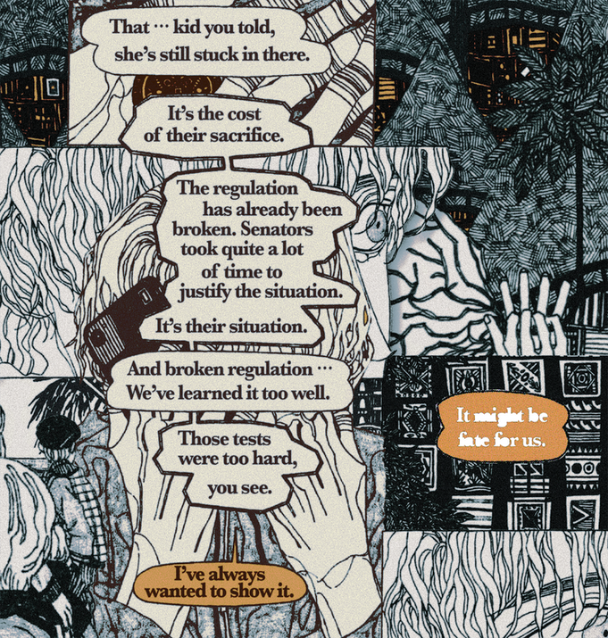

05



Of Deities
장장 세번이나 그를 쫓아다녔는데 그는 두번 다 죽었다. 이번이 세번째이다. 자꾸
남이 그를 더러 나쁜놈이라고 했던 데에는 분명 내가 나쁜놈을 지목하고 다녔기
때문이었다. 그것을 관두어야 했다. 그리고 다행히 그가 발견되었다. 그의 야심찬
계획은 천천히 알아가야 하는 것이었다. 사실은 정말 정말 선악이 싫었다. 그는
그녀와 함께 영원할 것이다.
-
I had to stalk him three times to get him here, and he was found dead two times before. This is the third time. The reason that some people I met kept calling him a bastard was clearly that I was the one going around pointing quite many people out as bastards. I had to quit this first. And very fortunately, he was found (alive). His ambitious plan was something to be understood very slowly, and gradually. In fact, I truly hate the good and bad theory. He and she I believe, will be permanent.
-
I had to stalk him three times to get him here, and he was found dead two times before. This is the third time. The reason that some people I met kept calling him a bastard was clearly that I was the one going around pointing quite many people out as bastards. I had to quit this first. And very fortunately, he was found (alive). His ambitious plan was something to be understood very slowly, and gradually. In fact, I truly hate the good and bad theory. He and she I believe, will be permanent.
신들의
Paul, 072726-072726, L’Impossible
Paul, 072726-072726, L’Impossible
ⓒ 2026 피플즈 PEOPLES All Rights Reserved.